Gold Chandelier Earrings for Bride: The Ultimate Style Guide
Explore regal filigree, pearl-accented drops, neckline harmony, and weight engineering for stunning, all-day wedding comfort.
Explore expert jewelry care guides, ring stacking inspiration, silversmith tutorials, and gemstone lore. Every article is crafted for optimal readability and loved on Pinterest.
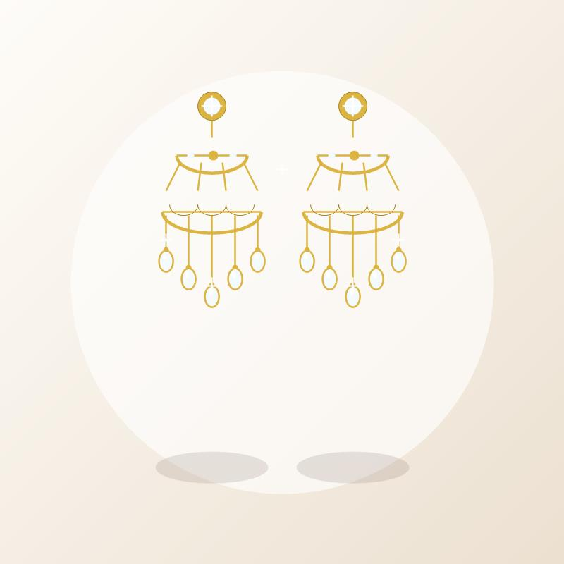
Explore regal filigree, pearl-accented drops, neckline harmony, and weight engineering for stunning, all-day wedding comfort.
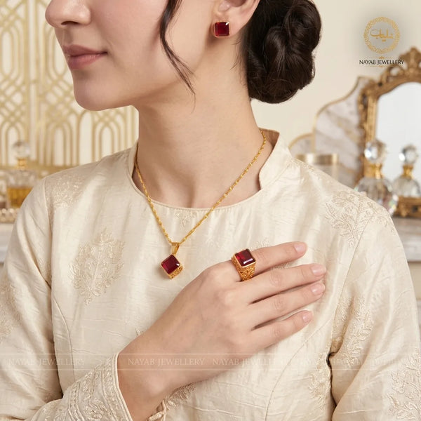
Discover stone meanings, silver hallmarks, chain length pairing, and essential jewelry care for natural gemstone pendants.

Discover delicate studs, luminous pearl drops, minimalist huggies, neckline styling, and metal harmony for effortless wedding elegance.
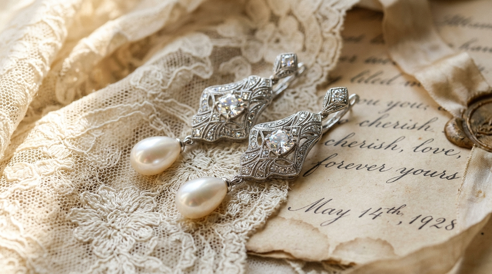
Explore Victorian filigree, Art Deco chandeliers, pearl drops, neckline styling, and heirloom care for romantic bridal elegance.
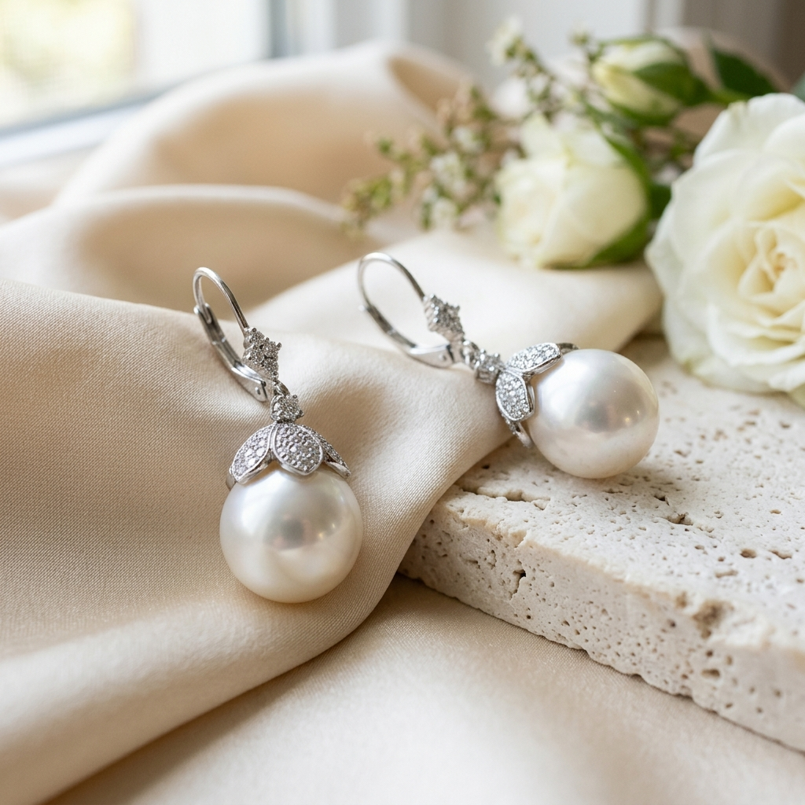
From luminous drop earrings and classic studs to neckline matching and pearl varieties, discover the perfect bridal earrings for your wedding day.
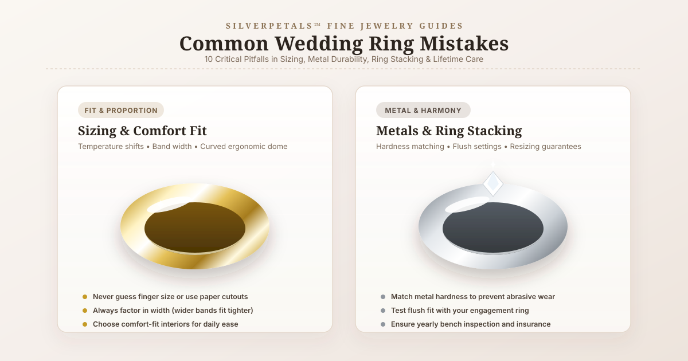
Avoid costly missteps in sizing, metal durability, ring harmony, and lifestyle wear. Essential tips for choosing forever bands.
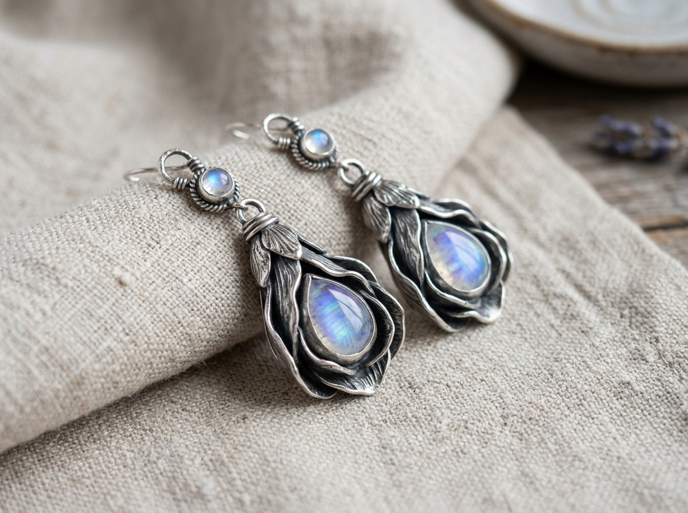
Learn why sterling silver tarnishes, safe DIY home cleaning methods, the "Last On, First Off" rule, and silversmith storage secrets.
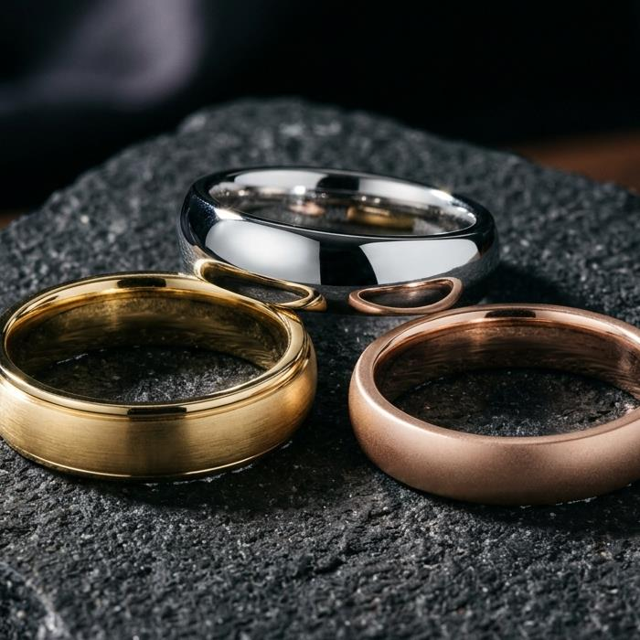
Master focal anchor pieces, mixing band textures, and negative space across your hands for effortless Pinterest-worthy aesthetics.
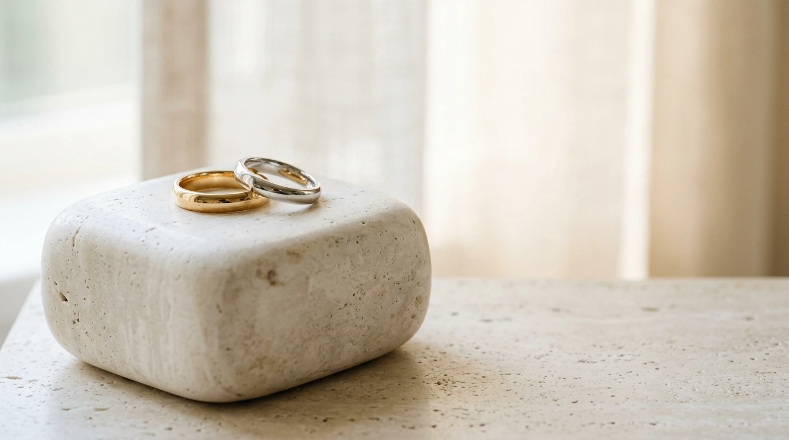
Learn what comfort fit wedding bands are, how they compare to standard fit rings, width considerations, metal choices, and sizing tips.
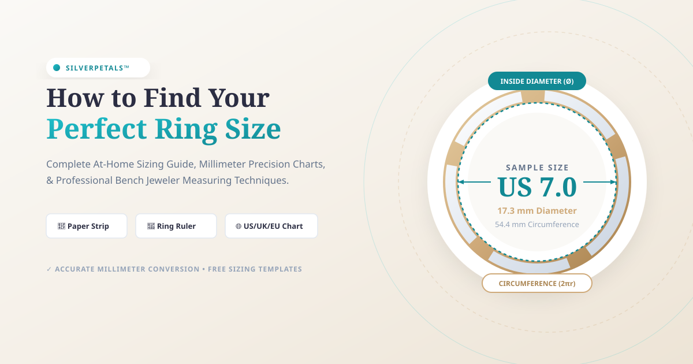
Learn how to find your ring size accurately at home with our conversion chart, easy paper method, and jeweler tips.
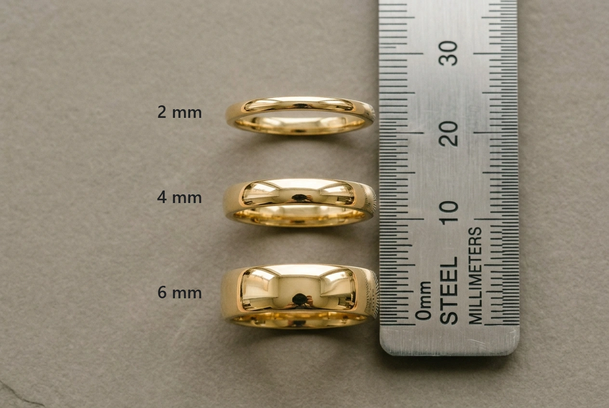
Compare 2mm to 8mm wedding rings by hand shape, metal density, comfort-fit mechanics, and engagement ring stacking.
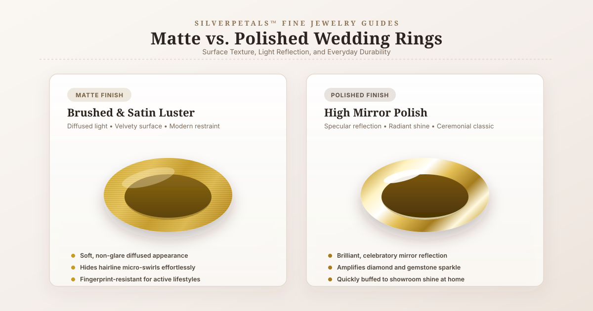
Explore satin, brushed, sandblasted, and mirror-shine finishes. Compare scratch visibility, daily patina, lifestyle suitability, and maintenance.
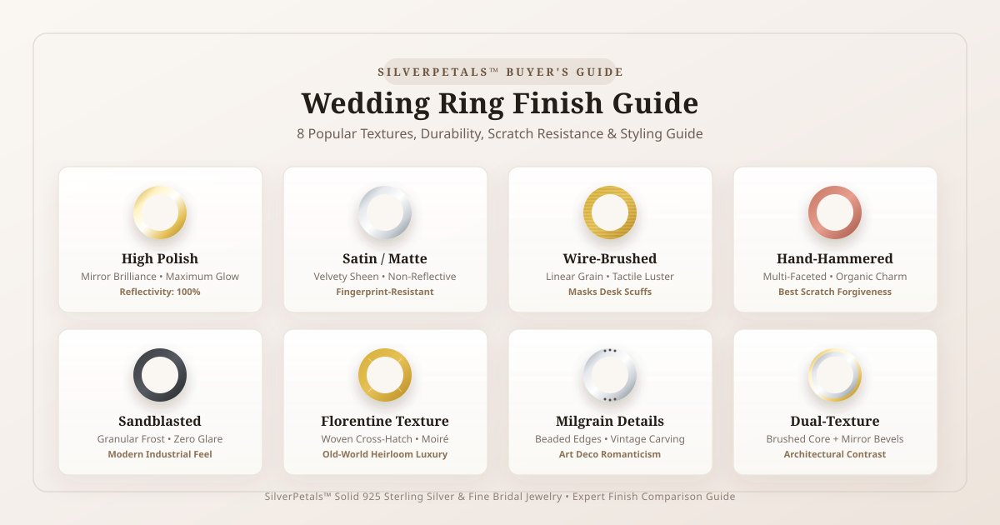
Compare 8 ring finishes: high polish, satin matte, wire-brushed, hammered, sandblasted, florentine, milgrain, and dual-texture.
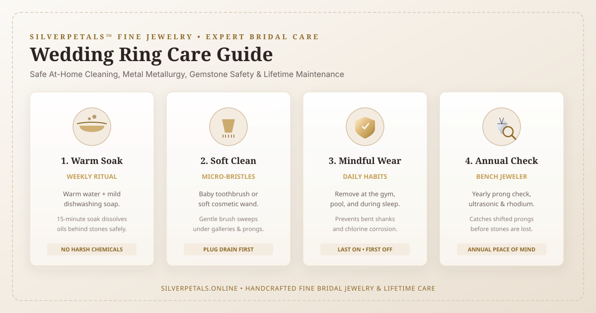
Safe at-home cleaning, gemstone care, daily wear habits, safe storage, and annual bench jeweler maintenance to keep rings brilliant forever.
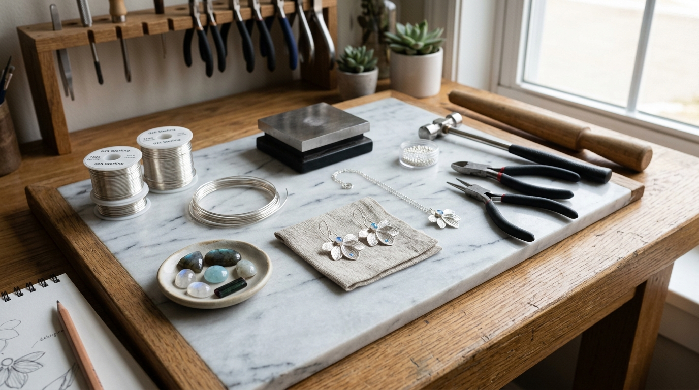
Discover the history, colors, Mohs hardness, and metaphysical lore for every birthstone from January Garnet to December Turquoise.
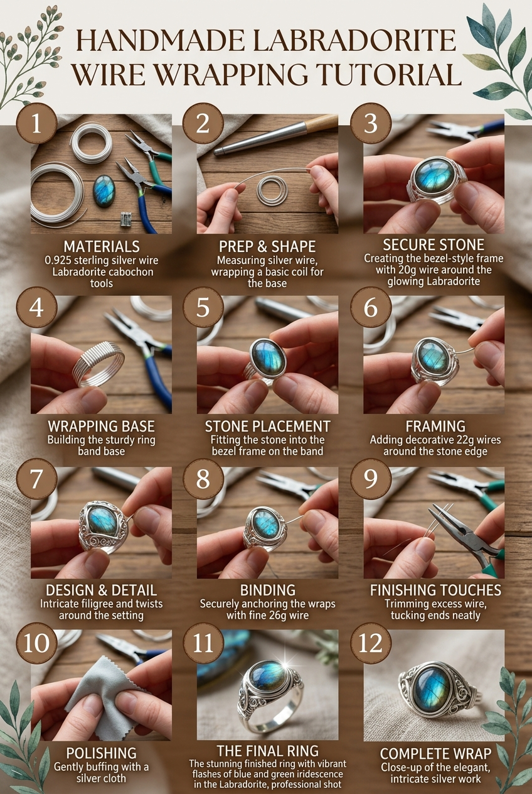
Illustrated step-by-step tutorial with tools checklist to wrap a natural flash Labradorite cabochon in solid sterling silver wire.